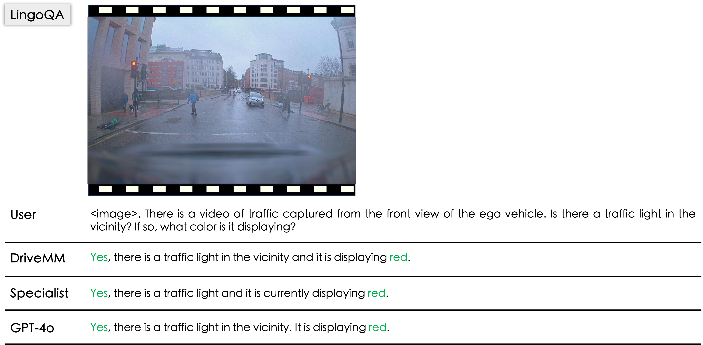
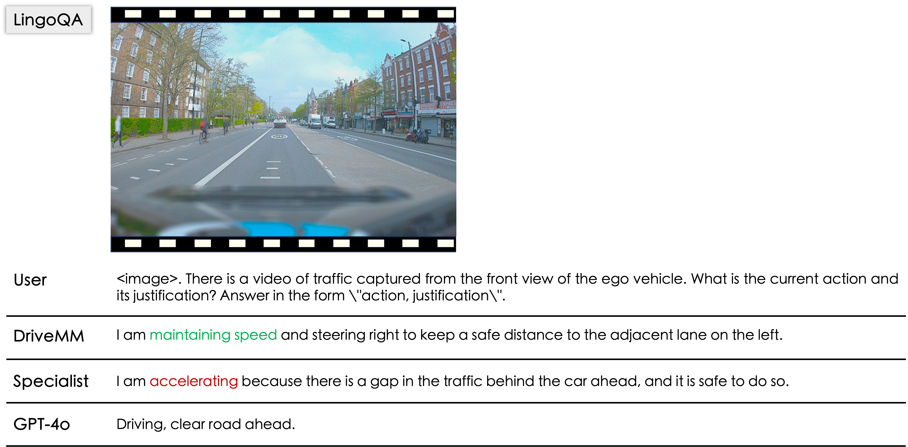
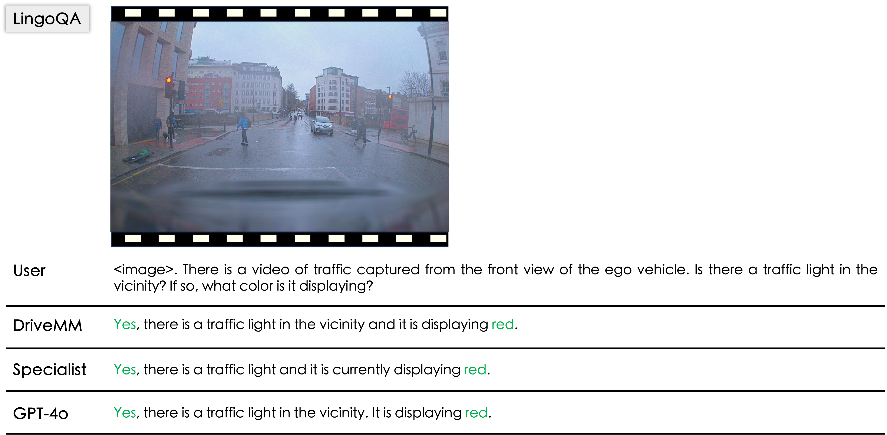
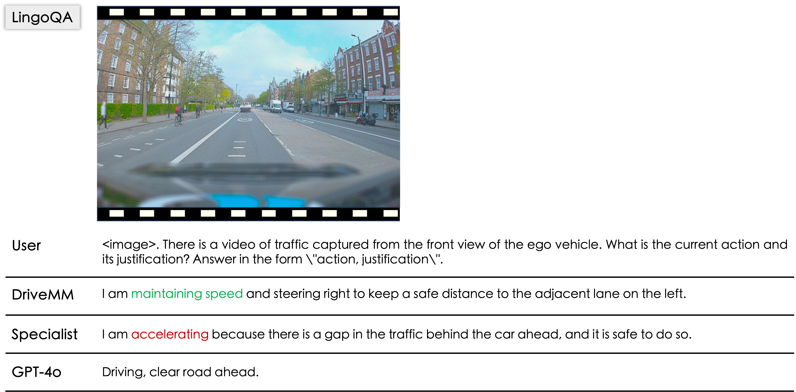

 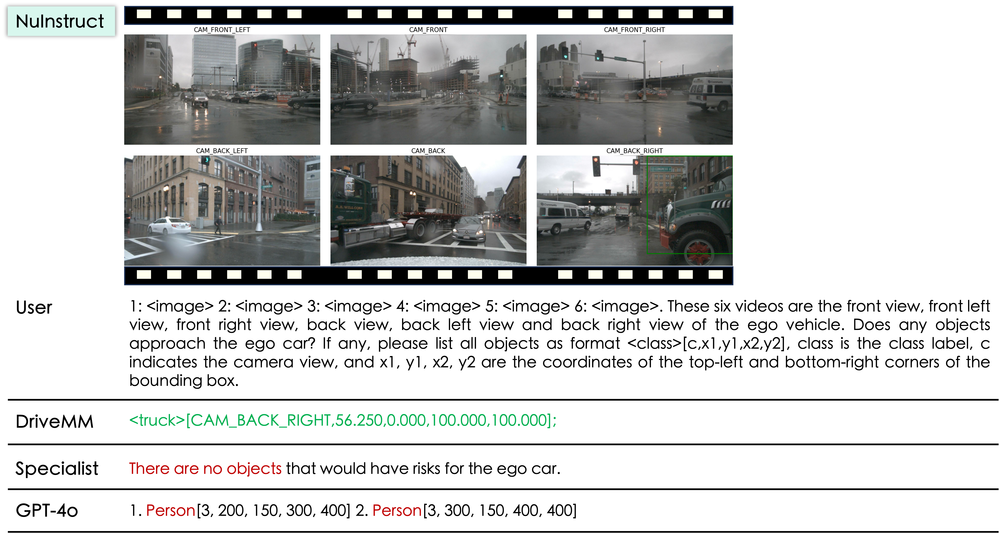
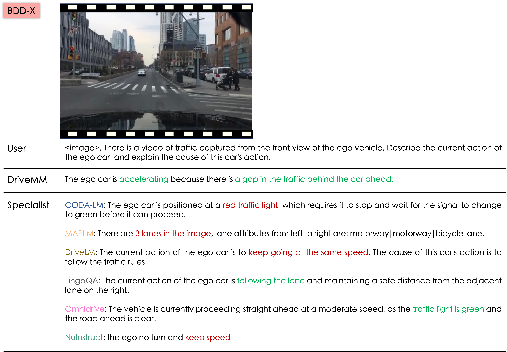
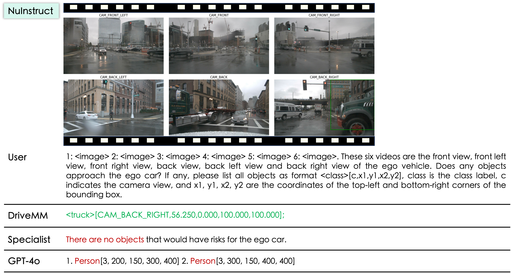
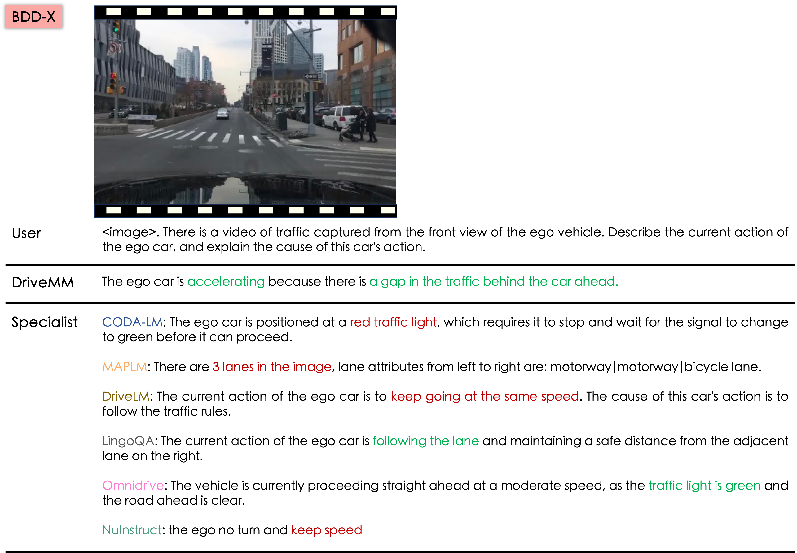
Left: DriveMM outperforms all specific SOTA models and other general large multimodal models across all 6 datasets comprising 13 tasks; Right: In zero-shot learning on unseen dataset, DriveMM demonstrates stronger generalization ability compared to specialist models trained on individual datasets.
Large Multimodal Models (LMMs) have demonstrated exceptional comprehension and interpretation capabilities in Autonomous Driving (AD) by incorporating large language models. Despite the advancements, current data-driven AD approaches tend to concentrate on a single dataset and specific tasks, neglecting their overall capabilities and ability to generalize. To bridge these gaps, we propose DriveMM, a general large multimodal model designed to process diverse data inputs, such as images and multi-view videos, while performing a broad spectrum of AD tasks, including perception, prediction, and planning. Initially, the model undergoes curriculum pre-training to process varied visual signals and perform basic visual comprehension and perception tasks. Subsequently, we augment and standardize various AD-related datasets to fine-tune the model, resulting in an all-in-one LMM for autonomous driving. To assess the general capabilities and generalization ability, we conduct evaluations on six public benchmarks and undertake zero-shot transfer on an unseen dataset, where DriveMM achieves state-of-the-art performance across all tasks. We hope DriveMM as a promising solution for future end-toend autonomous driving applications in the real world.
We adapt the architecture form of LLaVA with a different model instantiation, processing various visual input signals. We design a perspective-aware prompt to accept multi-perspective inputs in AD scenario. Equipped with diverse AD multimodal data, DriveMM possesses an all-in-one capability to accomplish multiple tasks in AD.
We compare with state-of-the-art specialist models, commercial models and open-source large multimodal models across diverse autonomous driving valuation benchmarks spanning multiple modalities. †Specialist models correspond to the performance of six different models. ∗ indicates max((Accuracy+MAP+BLEU-MAE)/4, 0).
Specialists are fine-tuned on a single dataset, whereas DriveMM is fine-tuned on all datasets.
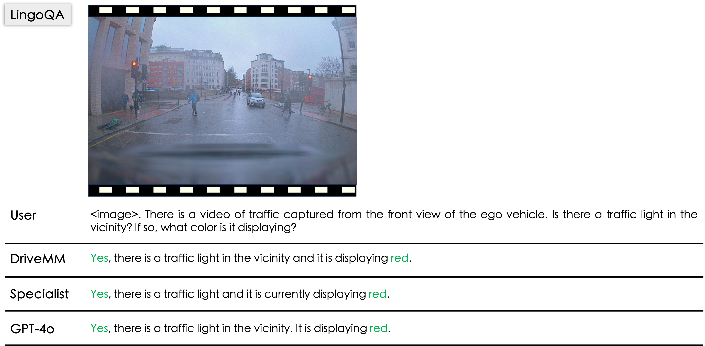
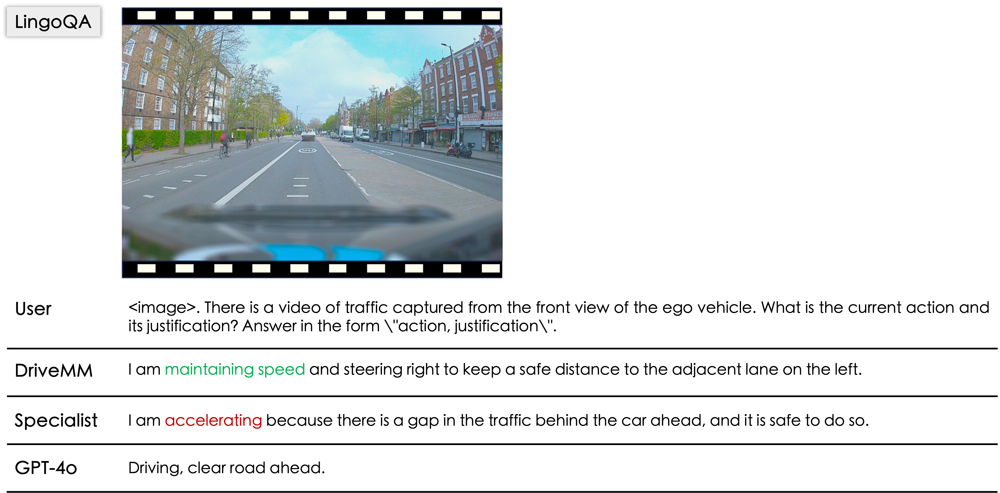
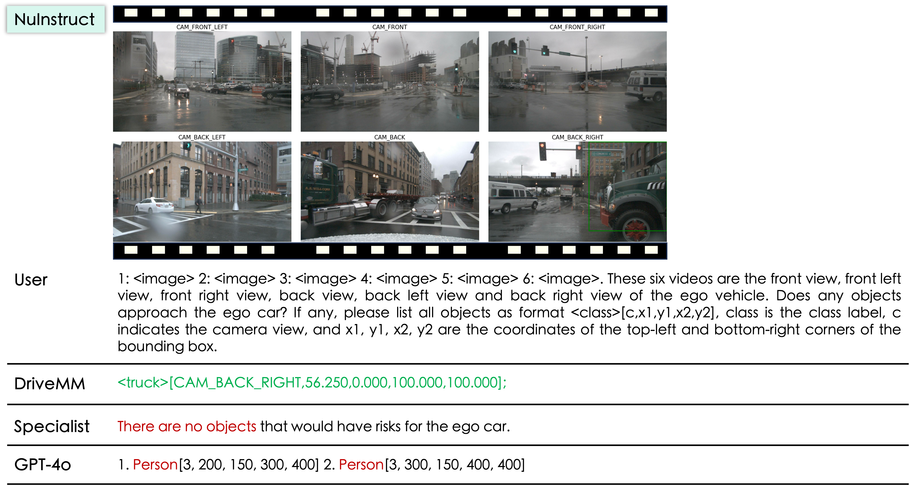
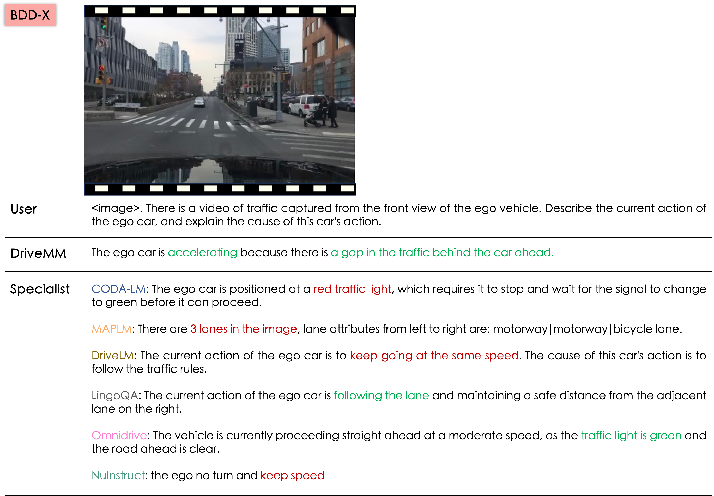